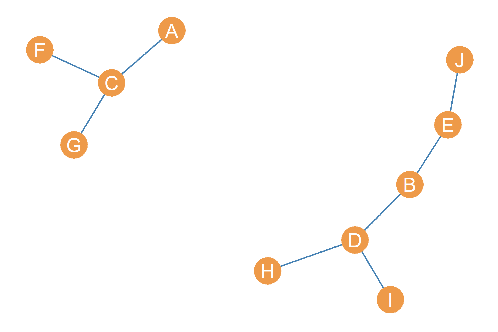
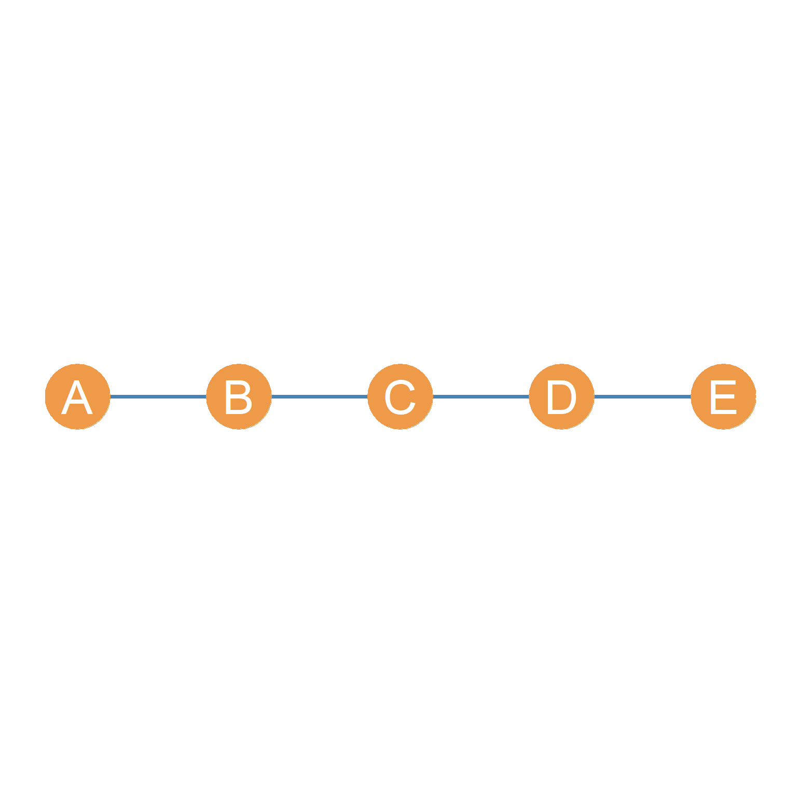
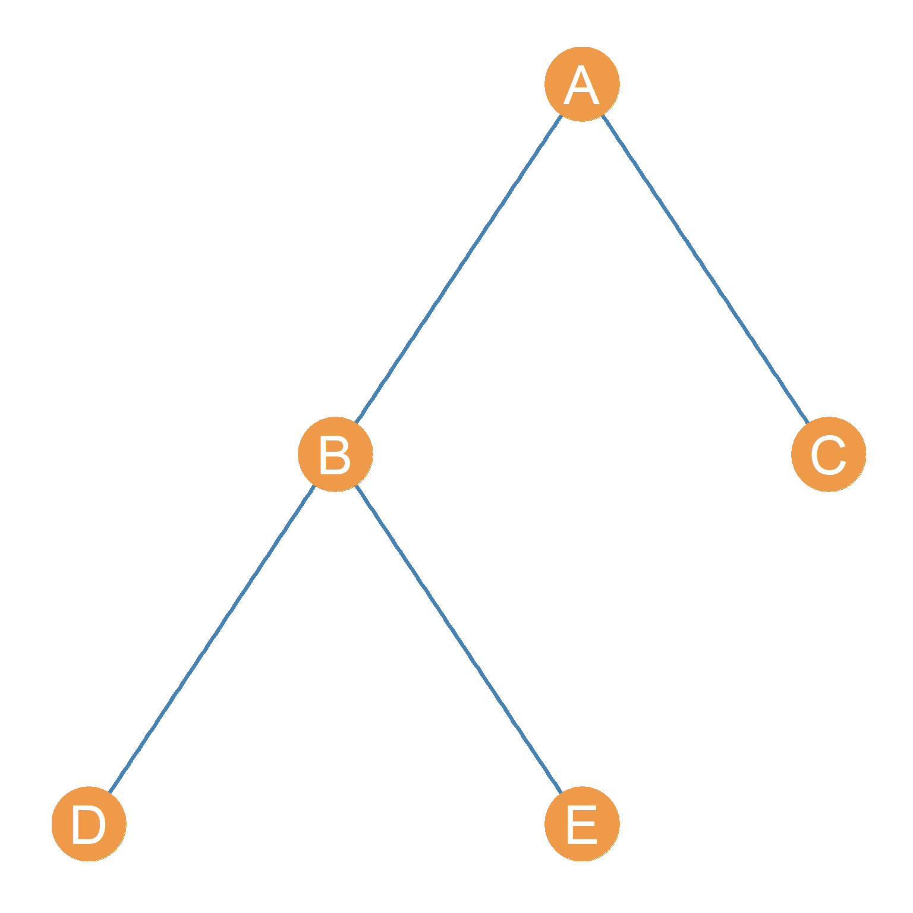
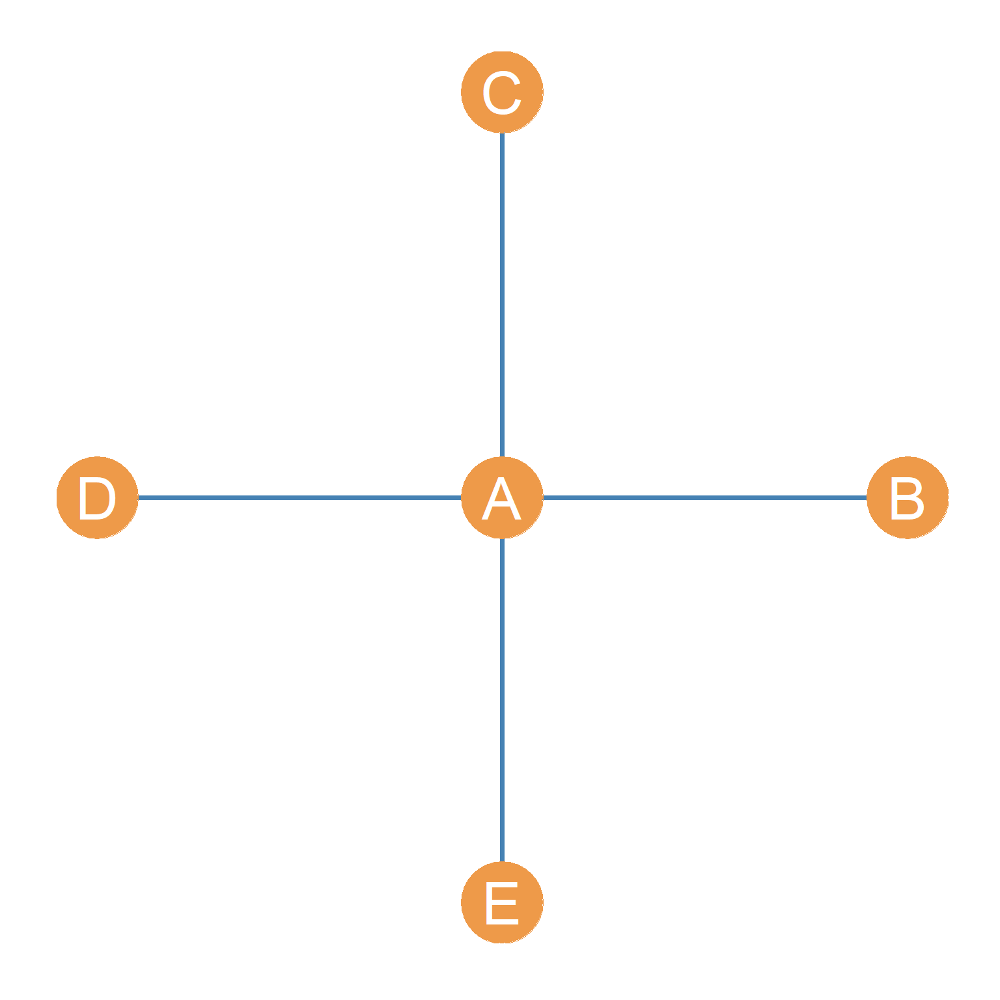
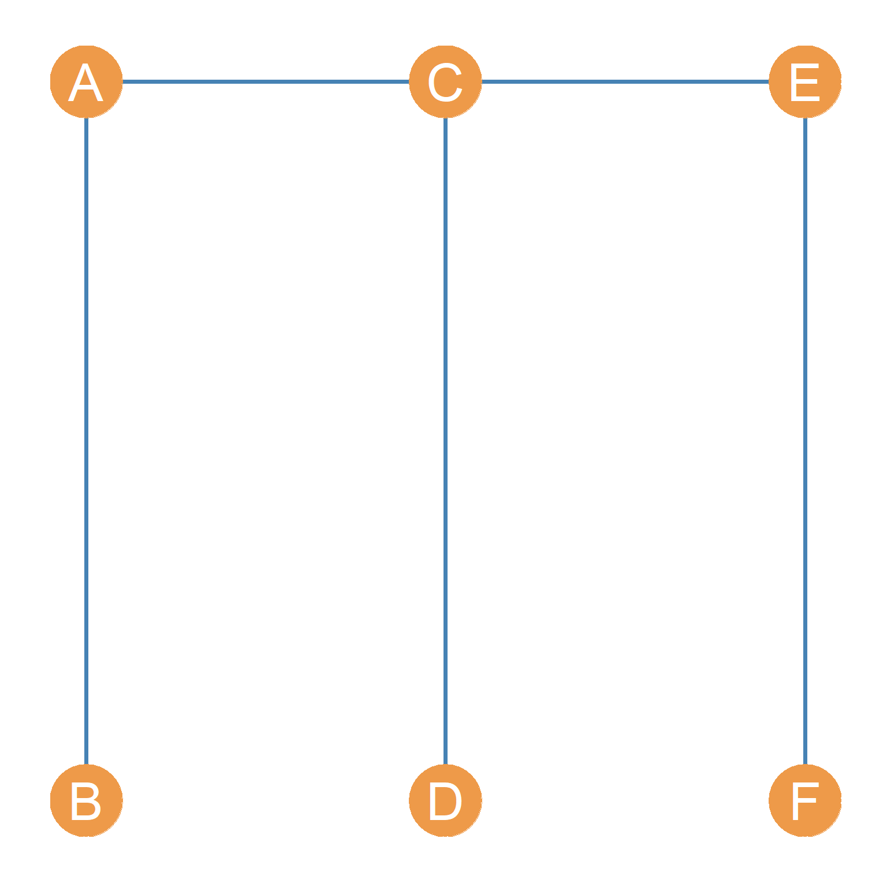
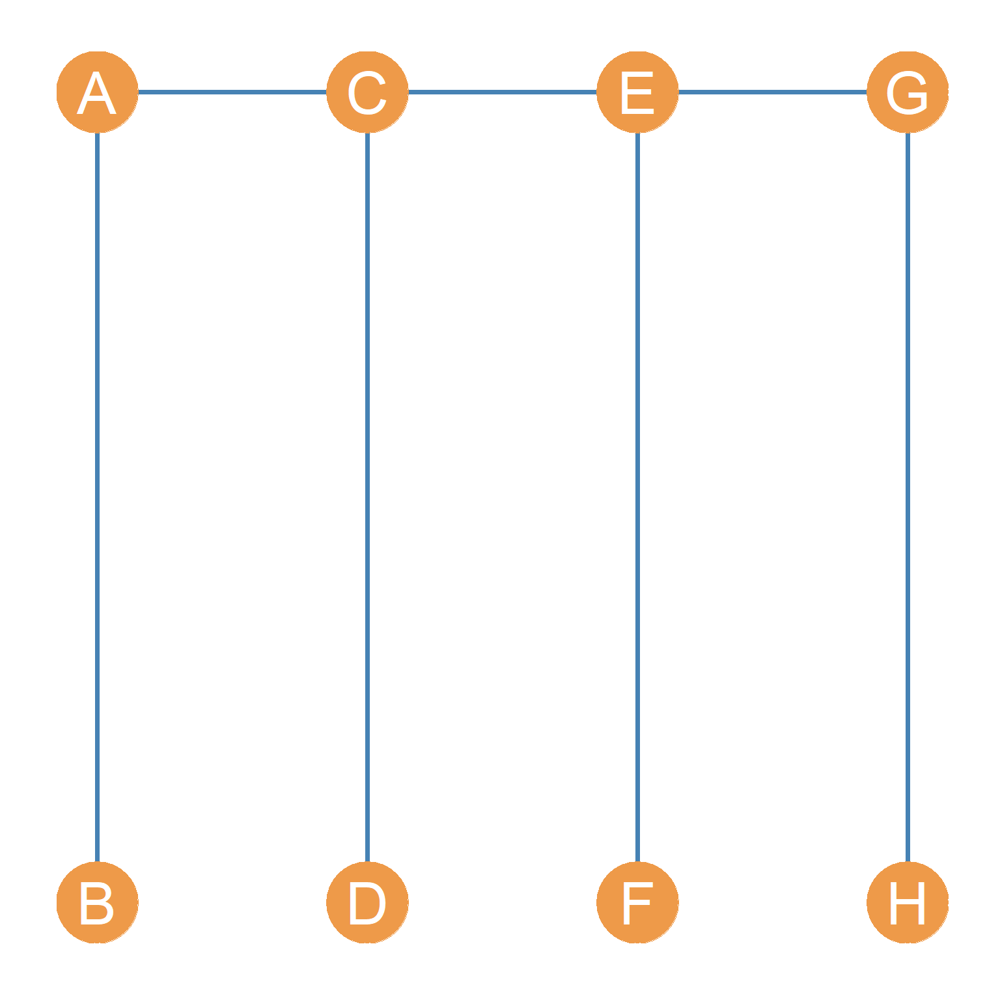

9 Tree Graphs
If a graph is both connected and has no cycles, then it is tree graph (Benjamin, Chartrand, and Zhang 2017, 68). The four tree graphs with five nodes are shown in Figure fig-trees. Recall from sec-cycles in sec-indirect, that a cycle is a path (as defined in sec-paths) that begins and ends with the same node. Thus in a tree graph, you can never start with a node and trace a sequence of distinct edges and nodes that take you back to the node you started with!
9.1 Properties of Tree Graphs
Tree graphs have the interesting property that their number of edges \(m\) is always equal to their number of nodes \(n\) minus one. Thus, if a graph is a tree graph or order five, we know it must contain four edges (it must be of size four). For instance, in Figure fig-trees, all the graphs have four links. If we were to add a fifth link connecting any pair of nodes to any of the graphs, it would create a cycle (of some length) and thus the graph would no longer count as a tree graph! Try it for yourself and see.
In equation form, if \(G(n, m)\) is a tree graph, then:
\[ m = n - 1 \tag{9.1}\]
Using simple algebra, we can also solve for the order of a tree graph if we know the size:
\[ n = m + 1 \tag{9.2}\]
This equation says that the order of a tree graph is equal to the number of edges plus one.
Note that from Equation eq-sumki in sec-degsum that the sum of the degrees of an undirected graph equals twice the number of edges (\(2m\)). Applying this reasoning, we can see that there is a special formula for the sum of degrees of an undirected tree graph. The reason is that if we know that:
\[ \sum_i k_i = 2m \tag{9.3}\]
And we also know that \(m = n - 1\) as per Equation eq-tree1, then substituting for \(m\) in Equation eq-tree3, gives us:
\[ \sum_i k_i = 2(n-1) = 2n - 2 \tag{9.4}\]
Thus in a tree graph, the sum of degrees will always equal to twice the number of nodes minus two!
Tree graphs have four other unique properties.
- First, if \(G\) is a tree graph, then every node \(V\) in \(G\) is linked to every other node via a single path.
- Second, the one path connecting each pair of nodes is unique, that is, a sequence of nodes of and edges that is distinctive for that node pair and does not repeat for any other pair.
- Third, removing even a single edge of a tree graph disconnects the graph. Every edge of a tree graph thus counts as a bridge as discussed in sec-indirect.
- Fourth, following (3), if we disconnect a tree graph by removing an edge, the resulting connected components are also trees.
A disconnected graph whose components are trees is called (you guessed it) a forest. Figure fig-forest is a forest.



As Figure fig-trees shows, tree graphs come in different configurations, some of which are of particular note.
9.2 The Line Graph
Note for instance, that Figure fig-trees(a) is just a straight path between two nodes. This graph counts as a tree as it is both connected and has no cycles. A graph like Figure fig-trees(a) which are just one long path featuring some set of nodes is also called the line graph. Line graphs are distinguished by their order and can be referred as \(L_n\) where \(n\) is the number of nodes. Thus, \(L_5\) is the line graph shown in Figure fig-trees(a); a line graph with five nodes.
What are line graphs useful for? Well, they can be used to model the social phenomenon known as a the “telephone game.” We can set up people in a line graph in a laboratory, have nodes pass a message, piece of gossip or a story along the line and see how different the original message relayed by \(A\) is by the time it gets to \(E\). Obviously, the longer the number of edges in the line, the more distortion we should expect at the other end.
9.3 The Star Graph
Note also the graph that is just a central node connected to all the other end-point nodes who are not themselves connected to one another, like Figure fig-trees(d) also counts as a tree. This graph is sometimes called the star graph. Like line graphs, we can refer to star graphs by using a letter and a number indicating their order like \(S_n\). Thus, \(S_5\) is the star graph with five nodes as in Figure fig-trees(d).
Star graphs are useful for modelling centralized systems like the airport network we saw in sec-networks. Such hub-spoke systems feature a central node (the hub) connected to a bunch of end-point nodes not connected to one another (the spokes), as when a big airport (like LAX) sends flights to smaller regional airports. In this system, LAX is the “hub” at the center of the star and the smaller airports are the “spokes” at the end.
9.4 Caterpillar Graphs
Tree graphs with an even number of nodes can sometimes be drawn like the ones in Figure fig-caterpillars. This is a line graph on top, with edges sticking out of each node in the line graph connecting to an equal number (half the other nodes in the graph) of end point nodes.
Because of the shape they form, these tree graphs are sometimes called caterpillar graphs, with the line graph at the top playing the role of the caterpillar’s “body” and the edges incident to the end point nodes the role of the “legs.” Figure fig-caterpillars(a) shows a caterpillar graph of order six and Figure fig-caterpillars(b) shows a caterpillar graph of order eight.


Like other graphs, tree graphs can be directed and undirected. The graphs shown in Figure fig-trees and Figure fig-caterpillars are undirected trees.
Benjamin, Arthur, Gary Chartrand, and Ping Zhang. 2017. The Fascinating World of Graph Theory. Princeton University Press.